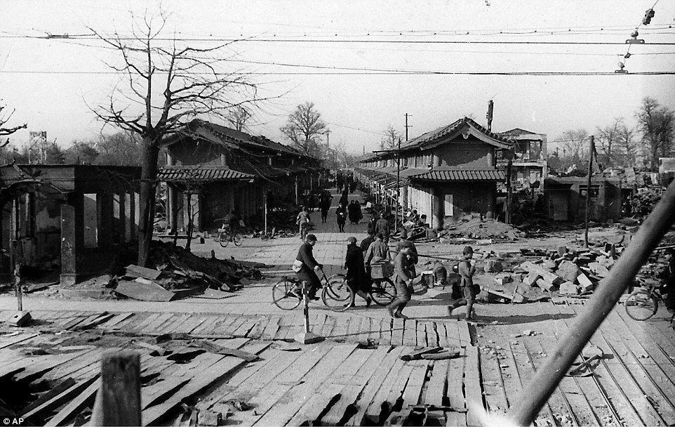

 After World War II, Japan was destroyed by aerial bombings, the urban centers were ruined. Japan did not only face problems from the physical destruction that happened during the war, but issues arose elsewhere; Unemployment being one of them. After the war, 7.6 million Japanese troops were left without a job. 4 million other workers were left without and an additional 1.5 million Japanese emigrants who were required to return. This added up to an 13.1 million people who were unemployed.
Another issue faced was energy shortages. The Koreans and Chinese who were previously forced to work in coal mines refused to continue. Along with energy shortages were shortages of food, primarily rice. Agriculture and coal mining soaked up a lot of labourers from the newly unemployed. This shift of people going into agriculture and coal mining meant that the unemployment had less of an effect. Along with inflation, these two problems set the stage for Japan's economy after World War II.
The allied powers, mostly the United States, occupied Japan after the war. While control of Japan by American forces was indirect, the reform policies set forth acted as direct control. The occupation of Japan was led by General Douglas MacArthur who was the supreme commander for the Allied Powers, abbreviated as SCAP. The United States would set major economic reforms when in control which would greatly affect the economic situation in the early years of recovery.